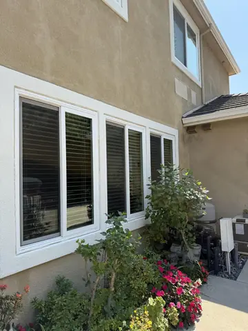
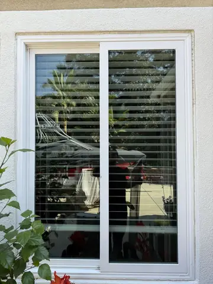
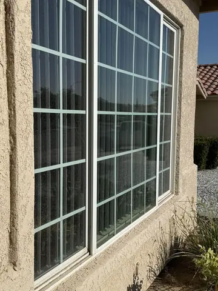

Home/Post Construction Window Cleaning
Serving the High Desert this weekPost Construction Window Cleaning in the High Desert
The last trade in before the walkthrough.
Stucco splatter, paint overspray, manufacturer stickers, silicone smears and tracks full of drywall dust. None of it comes off with a regular window wash. We do the final glass on new builds, remodels, flips and pre listing homes across the Victor Valley.
Read our Google reviews · Free inspection · Satisfaction guaranteed
Interested in seeing window cleaning we've done?
Photos from our own jobs, with the town on each one we know. Tap one to see it bigger.
 Spring Valley Lake · Arched window
Spring Valley Lake · Arched window Apple Valley · Corner picture window
Apple Valley · Corner picture window
Row of front windows
Sliding door glass
Hesperia · Grid windows Phelan · Back patio window
Phelan · Back patio window


Like what you see? Request your service below.
Tell Tony what your property needs
Choose one or more services and a preferred day. Tony confirms the scope, final price and appointment personally. No payment is taken here.
What is actually on new glass
Stucco and mortar splatter
Alkaline, bonded, and it scratches if you rub it dry. Softened first, then lifted with a blade on wet glass.
Paint overspray
Fine mist from spraying trim and eaves. Invisible until the sun hits it, then the whole pane looks frosted. Solvent and a scraper.
Stickers and adhesive
Every pane ships with a label. Peeled wrong, half the glue stays. Same staged solvent process we use on storefront adhesive.
Silicone and caulk smears
Where the sealant bead got wiped onto the glass. Needs a specific solvent, not soap.
Drywall dust in every track
Vacuumed, then washed. Skipping this puts grit back on the glass the first time the window opens.
Concrete and grout haze
From the flatwork and tile crews. Acid free removal so the frames are not damaged.
The one thing that separates a pro from a scratch claim
Tempered panes, the ones with the little etched bug in the corner, can carry microscopic fabricating debris fused to the surface from the tempering oven. Drag a razor across it and the debris moves with the blade and scratches the glass. It is the most common cause of post construction damage claims in the trade.
We test every tempered pane in a corner first. If the blade drags, that pane gets a non scratch method instead of a scraper. It is slower and it is why we ask builders to leave the stickers on until we arrive, so we know which panes are which. You get a note on any pane that tested rough, in writing, before the job starts.
Builders, agents, flips, and homeowners after a remodel
Tract and custom builders
Per lot pricing around final walk dates. We can be the last trade in. One invoice per phase, certificate of insurance on file.
Real estate agents
The day before the listing photos, inside and out, so the glass disappears in the pictures. Also pre inspection and pre close cleans.
Flippers and investors
After the painters and before the stager. Tracks vacuumed, screens back in, sliders detailed.
Homeowners after a remodel
New windows installed and the crew left stickers, silicone and a layer of dust. One visit and it looks like the brochure.
Property managers
Turnovers on units that had work done. Quick scheduling, photos on completion.
What it costs
Single story, inside and out · two story from $349 · per lot and per pane for large jobs
- Every pane inside and out, stucco, paint and stickers removed
- Tempered glass tested and noted before any scraping
- Tracks vacuumed and washed, sills wiped
- Screens cleaned and reinstalled
- Sliding door tracks detailed
- Photos on completion for the file
A regular exterior clean is $149 single story. Post construction is more because every pane needs solvent and blade work and the tracks need clearing, which runs two to three times the labor. Large customs and multi lot phases are walked and quoted per pane or per lot, firm before we start.
Why builders and agents should have us on the list
- We test tempered glass before we touch it The single most expensive mistake in this work is a scratched tempered pane on a brand new house. We test every one and put it in writing. Most crews do not know to.
- We schedule around your walk date Tell us the final walk and we back into it. Last trade in, nobody behind us to dust the glass again.
- One invoice, certificate on file Per lot, per phase or per house. General liability certificate sent before the first visit.
- Photos on completion Every pane, every track, timestamped. It closes the loop with the super and the buyer.
- The number is published From $249. Most post construction cleaners will not quote until they have you on the phone. You already know roughly what this costs.
Related pages
New Construction Window Cleaning in Silverwood
The first real clean your new windows get. Read more
Window Cleaning in Silverwood
From $149, screens, tracks and sills included. Read more
Inside Windows and Tracks
Every interior window in the house for $49, same visit, tracks vacuumed and wiped dry. Read more
Post construction questions
How much is post construction window cleaning?
From $249 for a single story home and $349 for two story, exterior and interior, which covers stucco splatter, paint overspray, stickers, silicone and the drywall dust that fills every track. Big custom homes and multi lot tract work are quoted per pane or per lot after a walk. Every quote is firm before we start.
Why is it more than a regular window cleaning?
Because it is a different job. A regular clean is water and a squeegee. New construction glass has material bonded to it that needs solvent, scraping on wet glass, and often two passes. The tracks are full of drywall dust and cut offs. It takes two to three times as long per pane.
Is it safe to scrape new windows?
Usually, with one exception that matters. Tempered glass can carry tiny fabricating debris fused to the surface, and a blade drags it across the pane and scratches. We test every tempered pane in a corner first and switch to a non scratch method if it drags. We tell you which panes are tempered before we start, and we do not bill for a mess we did not make.
Do you work with builders on multiple lots?
Yes. Per lot pricing, scheduled around final walk dates, one invoice per phase. We can be the last trade in before the walkthrough so the buyer sees clear glass. Certificate of insurance on file.
Can you do it before a listing photo shoot?
That is one of the most common calls. Agents book us the day before photos so the glass is invisible in the pictures. Same for flips. Inside and out, screens back in, tracks vacuumed.
What should the contractor do before you arrive?
Have the stickers left on so we know which panes are tempered, keep painters away from the glass once we are done, and make sure water and power are on. That is it.